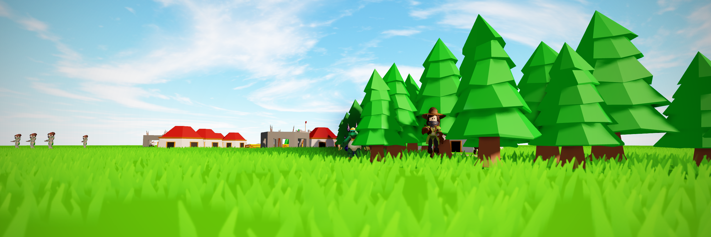
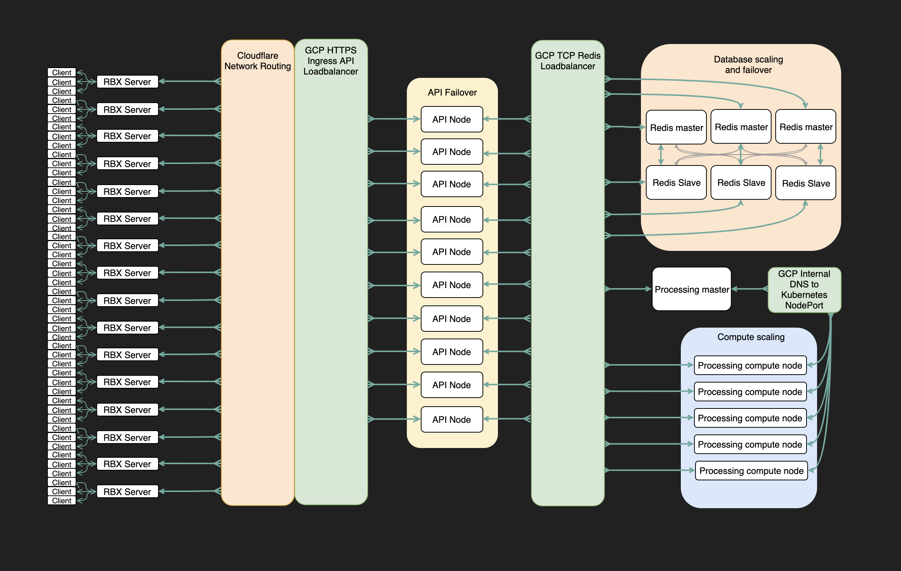

Pioneers
My current and most ambitious project, boasting multiple platform first features.
Pioneers is a real time strategy game with persistent civilisation state as seen in games like Clash of Clans. Unlike Clash of Clans there is one world where every player builds their civilsation, as opposed to each civilisation being in their own isolated instance.
Players can see every civilisation and interact with them in real time, including watching battles between other players. To achieve this Pioneers is powered by a custom backend which synchronises the game across all Roblox servers entirely removing the concept of being in seperate servers.
Pioneers is a solo project, I have made every asset in the game with the only exceptions being sound (which is either licensed or public domain), humanoid models (which are from Roblox) and UI icons (which are public domain).
Gameplay Promises
Being powered by a custom backend, Pioneers can make some bold promises:
- Build your civilisation as big as you want
- Control an unlimited number of villagers
- Take part in huge scale battles involving 1000s of units
- Compete with every player in real time
- Exploits are impossible
- Explore a world larger than any seen on Roblox
Development Video
This video documents the development process with emphasis on demonstrating technical features and an example of following agile principles by making a minimum viable product then iterating. Currently unfinished and will be updated when Pioneers is more complete.
Cross-Server Replication/Synchronisation
The player on the left is using the normal Roblox client connected to a live Roblox server, the player on the right is playing from within Roblox studio. Player characters will also be replicated across servers.
Dynamic World Streaming
Units are streamed in as they come into view.
This system is capable of per unit resolution.
The server contains no objects! Everything is created on clients to reduce load on the server.
Usually the view distance is 30 but here it is set to 5 to exagerate the streaming. When units are out of view distance they are cheaply updated to keep performance up, even on low end devices. View distance can be changed by the player to suit their preference.
Roblox servers only fetch objects in partitions which players can see (partitions are sections of the world, similar to chunks in Minecraft) so they don't need to load the entire world.
High Performance
Pioneers has been carefully optimised every step of the way ensuring smooth gameplay. It has a small memory footprint, low cpu usage and uses minimal network bandwidth.
Strong Backend Architecture

The backend is hosted on Google Cloud Platform and uses Nodejs with Redis. It is designed to be completely fault tolerant and scalable to withstand the demanding nature of Roblox. The API can be queried at https://api.mysty.dev although it will reject any request without a valid api key.
Data is efficiently stored to reduce Redis operations and maintain low network overhead, primarily via the extensive use of caching.
Intelligent agents
Every agent has complete individual logic and can respond to changes in real time. Here you can see how their pathfinding is dynamic with their logic being computed every game round.
This even extends to agent interactions. Agents are capable of affecting each other, such as when they battle, even when they are processed by different compute nodes.
And yes, this was very difficult to do!
Live updates
Updates can incrementally rollout across api or compute nodes while still maintaining live gameplay. With multiple nodes and an incremental rollout users won't even be able to tell the game is updating.
And more
Those are just the most significant features currently implemented and Pioneers has many more features planned such as clan vs clan battles!
Due to the focus on making a solid underlying framework, gameplay is still largely unintuitive and incomplete however it is currently live and can be tested out using the link below. Improved user on-boarding and goals to guide players are what is currently being worked on.
Play Pioneers